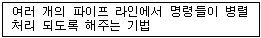
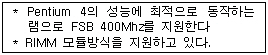
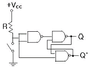
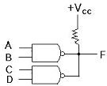
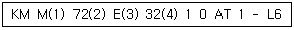

PC정비사-1급 (2003-08-10 기출문제)
1과목: PC운영체제
1. Windows98은 각종 하드웨어, 소프트웨어, 사용자의 정보등을 레지스트리에 저장하여 사용하며, 이 레지스트리는 백업한 후 복구할 수 있는데, 다음 중 이 레지스트리의 복구 방법으로 올바른 것은?
- Windows98 실행후 명령 프롬프트에서 SCANREGW를 실행한다.
- Windows98 실행후 명령 프롬프트에서 SCANREG/RESTORE를 실행한다.
- Windows98 시작시 F8키를 클릭하여 'Command Prompt Only' 모드로 부팅후 SCANREG/RESTORE를 실행한다.
- Windows98 시작시 F8키를 클릭하여 'Command Prompt Only' 모드로 부팅후 SCANREGW를 실행한다.
(정답률: 알수없음)

2. 다음 항목에 대한 설명 중 옳지 않은 것은?
- 디프래그(Defrag): 디스크의 이물질 제거 작업
- 시스템최적화: 시스템의 활용상태나 작업 효율을 최대화 하기 위해 행해지는 일련의 작업과정
- 하드웨어 충돌: 두 개 이상의 장치가 동일한 자원을 사용 할 때를 일컫는다.
- 디스크 오류검사: 디스크에 저장된 파일이나 폴더의 오류나 구조 검사 및 복구를 한다.
(정답률: 알수없음)
3. Windows98이 사용하는 파일과 그 용도가 잘못 연결된 것은?
- *.tmp - Windows 폴더에 생성되는 임시 파일들이다.
- WIN386.SWP - Windows가 사용하는 가상 메모리 파일로 일종의 스왑파일이다.
- USER.DAT, SYSTEM.DAT - Windows의 시스템 설정, 사용자 등록 정보 등을 담은 레지스트리 파일이다.
- BOOTLOG.TXT - Windows의 시작 로그 파일로 Windows가 정상적으로 부팅되지 않는 경우 자동으로 만들어진다.
(정답률: 37%)
4. DOS에서 관리할 수 있는 주 메모리 용량은?
- 1MB
- 32MB
- 64MB
- 128MB
(정답률: 알수없음)
5. Windows XP의 파티션 작업에 대한 설명 중 틀린 것은?
- 하나의 하드디스크에 1개의 확장 파티션을 만들 수 있다.
- 파티션 작업을 하는데 DOS부팅 디스켓이 필요 없다.
- 파티션이 끝나고 반드시 재부팅한 후에 포맷을 해야 한다.
- 논리드라이브는 디스크의 ‘볼륨’이라고 하며 무제한으로 만들 수 있다.
(정답률: 알수없음)
6. 부트 섹터에 기생하여 컴퓨터의 부팅을 방해하는 바이러스가 아닌 것은?
- 미켈란젤로 바이러스
- 예루살렘 바이러스
- 브레인 바이러스
- LBC 바이러스
(정답률: 알수없음)
7. 컴퓨터 처리 시스템의 성능을 향상시키고 데이터 처리의 생산성 향상을 위해 고려되어야 할 사항으로 옳지 못한 것은?
- 컴퓨터 프로그램의 처리와 제어 시스템의 동작상태를 항시 감시해야 한다.
- 데이터 처리를 위한 각종 컴퓨터 구성 H/W 요소의 활용이 효율적으로 이루어져야 한다.
- 데이터를 처리하기 위한 정보는 항상 완벽한 상태로 준비가 되어야 한다.
- 컴퓨터를 합리적이고 능률적으로 이용하기 위해서 인적자원과 업무수행의 환경과 조건이 구비되어야 한다.
(정답률: 91%)
8. 범용적인 컴퓨터를 사용시 바이러스 예방을 위한 방법으로 옳지 못한 것은?
- 하드디스크에 최신 바이러스검사 프로그램을 저장한다.
- 중요한 실행 파일은 읽기 전용으로 바꾸어 둔다.
- 컴퓨터 부팅시 AUTOEXEC.BAT 파일에 바이러스예방 프로그램을 실행해 둔다.
- 외부에서 사용하던 디스켓은 반드시 바이러스 검사를 실행한다.
(정답률: 알수없음)
9. 다음 중 프로세스 스케쥴링의 종류가 아닌 것은?
- FIFO ( First In First Out ) 스케쥴링
- Round Robin 스케쥴링
- Shortest Job First 스케쥴링
- Semaphore 스케쥴링
(정답률: 알수없음)
10. 인터넷상의 원격지 서버와 직접 접속한 후 마치 자신의 컴퓨터처럼 파일을 관리할 수 있는 프로그램은?
- Telnet
- Hyperterminal
- Archie
- Gopher
(정답률: 59%)
11. Windows XP에서 보안 설정 정책이 아닌 것은?
- 계정 정책
- 로컬 정책
- 공개 키 정책
- 사용자 구성 정책
(정답률: 알수없음)
12. Windows XP의 네트워크 환경에서 NetBIOS 이름을 IP 주소로 매핑 시켜주는 역할을 하는 것은?
- HOSTS File
- LMHOSTS File
- DNS
- WINS
(정답률: 알수없음)
13. LINUX 설치 내용으로 잘못된 것은?
- 부트 관리자인 LILO를 가지고 있다.
- 설치 과정 중 파티션 작업은 FDISK나 DISK DRUID로 선택하여 할 수 있다.
- 부트용 디스크를 만들 수 있다.
- 모든 리눅스의 설치는 CUI방식으로만 가능하다.
(정답률: 알수없음)
14. Windows XP Professional에서는 무인 자동화 설치 방법이 제공된다. 응답 파일을 이용하여 모든 컴퓨터에서 동일한 구성에 대해서는 자동화할 수 있다. 그러나, 만약 구성이 모두 다른, 이를테면 컴퓨터 이름이나 TCP/IP에 관련된 항목은 컴퓨터 마다 다를 수밖에 없다. 이런 경우에 응답 파일과 이것을 같이 사용함으로써 구성이 다른 여러 대의 컴퓨터에서의 Windows XP Professional을 완전 자동화 설치를 할 수 있다. 이것은 무엇인가?
- Volume License Key를 이용한 자동설치
- 이미지를 이용한 자동설치
- RIS(Remote Installation Service)를 이용한 자동설치
- Uniqueness Database File을 이용한 자동설치
(정답률: 37%)
15. Windows XP의 빠른 사용자 전환에 대해 바르게 설명한 것은?
- 이전 사용자의 세션을 모두 자동으로 종료하고 새로운 사용자의 로그인을 시작하게 된다.
- 실질적으로 Windows 98에서 지원하던 사용자 Log off와 똑같이 동작한다.
- 이전 사용자의 세션을 모두 백그라운드로 돌리고 새로운 작업을 할 수 있게 한다.
- 이전 사용자가 작업하던 모든 내용은 종료해야 한다.
(정답률: 알수없음)
2과목: PC주변기기
16. 펜티엄 4는 설계방식으로 넷버스트(Netburst) 마이크로 아키텍처를 사용한다. 넷버스트 마이크로 아키텍처에 대한 설명 중 틀린 것은?
- 클럭 주파수를 늘리기 위해 20단계에 이르는 하이퍼 파이프라인 구조를 사용 하였다.
- 클럭 당 처리 가능한 명령어의 수를 늘리기 위해 실행 추적형 캐시를 장착 하였다.
- 명령어 당 처리할 수 있는 데이터를 늘리기 위해 MMX를 추가하였다.
- CPU와 램 간의 데이터 전송 속도를 향상시키기 위하여 FSB를 400, 533, 800MHz로 향상 시켰다.
(정답률: 알수없음)
17. SB32, SB64, SB128 이라는 사운드 블라스터 시리즈로 유명한 사운드 카드의 16, 32, 64, 128이 의미하는 것은?
- SB32, SB64, SB128의 32, 64, 128은 사운드 카드가 데이터를 처리하는 비트수를 말한다. 32면 32비트로 데이터를 처리하고 128은 128비트로 따라서 숫자가 높을수록 사운드 데이터의 처리속도가 빠르다.
- SB32, SB64, SB128의 32, 64, 128은 미디 음원을 가진 사운드 카드에서 동시에 낼 수 있는 악기의 개수를 뜻한다. 64는 64의 악기를, 128은 128개의 악기를 동시에 연주할 수 있다는 의미이다.
- SB32, SB64, SB128의 32, 64, 128은 사운드 카드의 작동 속도를 말한다. 32는 32Mhz, 128은 128Mhz로 작동 클럭이 높을수록 속도가 빠르다.
- SB32, SB64, SB128의 32, 64, 128은 사운드 카드 제조업체에서 붙이는 제품 코드이다.
(정답률: 알수없음)
18. 다음 메인보드 칩셋 중 AGP 4X 포트를 지원하지 않는 것은?
- 845E
- 845GV
- 845G
- 845GE
(정답률: 알수없음)
19. CISC 컴퓨터와 RISC 컴퓨터에 대한 설명이다. 틀린 것은?
- CISC : 16~32개의 레지스터 사용
- RISC : Reduced Instruction Set Computer
- CISC : 다양한 길이와 형식의 명령어
- RISC : 고정길이의 명령어 제공
(정답률: 알수없음)
20. 다음 중 Wide DRAM은?
- DRAM의 외형 크기를 크게한 것
- 칩당 비트폭을 늘린 것
- DRAM의 외형 크기를 적게한 것
- 칩당 비트폭을 줄인 것
(정답률: 60%)
21. 다음은 펜티엄 CPU의 특징을 설명한 것이다. 무엇에 대한 설명인가?

- 분기예측
- 병렬처리
- 슈퍼 스컬러
- 파이프 라인
(정답률: 알수없음)
22. DVD는 사용 규격에 따라 용량이 달라진다. 다음 중 잘못 연결된 것은?
- Single Side Dual Layer - 7.95 GB
- Double Side Mixed Layer - 12.33 GB
- Double Side Single Layer - 13.32 GB
- Double Side Dual Layer - 15.90 GB
(정답률: 55%)
23. 다음은 어떤 RAM에 대한 설명 인가?

- DRAM
- RDRAM
- EDO RAM
- DIMM
(정답률: 알수없음)
24. INTEL의 모바일용 CPU에 채택된 기술로서 배터리의 사용시간을 연장하는 기술은?
- 스피드 스텝
- 3D나우
- 넷버스트 아키텍쳐
- 파워나우
(정답률: 알수없음)
25. RF방식의 마우스에 대한 설명으로 옳은 것은?
- 적외선을 이용한다.
- 장애물에 많은 영향을 받기때문에 설치장소를 잘 고려해야 한다.
- 무선주파수 방식이다.
- IR방식이라고도 한다.
(정답률: 알수없음)
26. 각 회사의 CPU의 코드명이다. 0.13미크론 공정에서 생산되는 CPU가 아닌 것은?
- 스핏파이어
- 투알라틴
- 노스우드
- 에즈라
(정답률: 알수없음)
27. 레이드를 구성하고 있는 하드디스크 중 하나에 문제가 생겼을 때 복구를 할 수 있는 시스템이 아닌 것은?
- 레이드 0
- 레이드 1
- 레이드 0+1
- 레이드 5
(정답률: 알수없음)
28. 케이블모뎀 및 서비스에 관한 사항이다. 틀린 것은?
- 서비스를 이용하기 위해서는 케이블 모뎀만으로도 가능하다.
- 케이블모뎀은 케이블 TV망을 이용하여 주고 받는 데이터를 디지털신호로 변환시켜 주는 기능을 한다.
- 케이블모뎀은 케이블 TV망의 여유대역폭을 데이터통신에 이용하게 해주는 장치이다.
- 사용자 수에 비례해 서비스 속도가 떨어진다는 단점이 있지만 기존의 모뎀에 비해서는 월등한 속도이다.
(정답률: 알수없음)
29. 문자, 음성 및 음향, 그림, 동영상 등의 정보 전달 매개체를 수요자의 요구에 따라 임의적으로 온라인상에서 볼 수 있는 방식은?
- 하이퍼미디어
- 맵핑
- 그래픽 선택 모드
- 온라인 캡쳐
(정답률: 알수없음)
30. EIDE에서 주소 폭을 28BIT로 사용하면 인식할 수 있는 하드디스크 최대 용량은?
- 80GB
- 100GB
- 120GB
- 128GB
(정답률: 알수없음)
3과목: 디지털 논리회로
31. 16진수 "12DF"를 10진수로 진법변환을 하였을 때 맞는 것은?
- 4831
- 3830
- 2831
- 1028
(정답률: 알수없음)
32. 멀티플렉서를 사용하여 구성한 다음 회로의 논리함수는?

- F(A,B,C)=∑(1,3,4,5)
- F(A,B,C)=∑ (0,3,5,6)
- F(A,B,C)=∑(3,5,6,7)
- F(A,B,C)=∑(1,2,4,7)
(정답률: 알수없음)
33. TTL오픈 콜렉터회로로 구성된 다음 회로의 논리식은?

- Y=(AB)' + (CD)'
- Y=AB XOR CD
- Y=(AB XOR CD)'
- Y=(AB)' (CD)'
(정답률: 34%)
34. (124)X = (67)10를 만족하는 X값은?(단, X는 기수(radix))
- 5
- 6
- 7
- 8
(정답률: 알수없음)
35. 비동기카운터(asynchronous counter)의 특징이 아닌 것은?
- 직렬 또는 리플(ripple)카운터라고도 하며, 내부에 플립플롭이 종속 연결되어 있다.
- 각단 플립플롭의 전파지연이 누적된다.
- 동기카운터에 비해 회로구성이 간단하다.
- 한번의 클럭펄스 변화가 동시에 각단을 트리거 시키므로 고속처리가 가능하다.
(정답률: 알수없음)
4과목: PC유지보수
36. 컴퓨터의 전원공급장치를 교체한 후 플로피디스크 드라이브에 계속 불이 들어오는 경우 고장수리 방법으로 가장 적절한 것은?
- CMOS 설정을 다시 한다.
- 스캐너를 제거한 후 다시 부팅 시킨다.
- 하드디스크 입출력 케이블을 새것으로 교환한다.
- 과부하로 인한 것이므로 전원공급 장치를 용량에 맞는 것으로 다시 교체한다.
(정답률: 알수없음)
37. 스캐너 인식은 되었으나 각종 그래픽 프로그램에서 "스캐너가 준비되어 있지 않습니다."라는 메시지가 나올 때 가장 적절한 수리 방법은?
- 스카시 아이디와 인터페이스 설정을 올바르게 한다.
- 마우스 프로그램을 제거한 후 재 설치한다.
- 사운드 카드를 제거한 후 보드에 재 설치한다.
- CD-ROM 드라이버를 제거한 후 프로그램을 재 설치한다.
(정답률: 알수없음)
38. 시스템 관리 마법사에서 실행할 수 없는 기능은?
- 자주 사용하는 프로그램의 속도 향상
- 하드디스크를 압축해서 공간 늘림
- 하드디스크 오류 검사
- 불필요한 파일 제거
(정답률: 알수없음)
39. 바이러스 침투를 막기위해 부트섹터와 파티션 테이블에 기록이 되지 않도록 하는 Anti Virus Protection은 Award Bios의 어떤 Setup에 속하는가?
- STANDARD CMOS SETUP
- BIOS FEATURES SETUP
- CHIPSET FEATURES SETUP
- POWER MANAGEMENT SETUP
(정답률: 알수없음)
40. 하드디스크(HDD)를 새로 구입하여 파티션을 지정한 후 포맷해도 No Rombios System Halted 라는 메시지가 나오면서 부팅 되지 않을 때 가장 적절한 조치 방법은?
- FDISK를 실행시켜 파티션을 나누어야 한다.
- 하드디스크의 전원을 확인해 본다.
- 패리티 비트가 포함되어 있는가를 확인한다.
- 데이터 버스 케이블을 제거한 후 다시 연결해 본다.
(정답률: 37%)
41. 컴퓨터 사용 도중 시스템이 갑작스럽게 다운될 원인으로 볼 수 없는 것은?
- CPU 냉각팬 고장으로 CPU가 과열되었다.
- 하드웨어 충돌이 발생하였다.
- 하드디스크에 물리적인 손상이 발생한 상태이다.
- 하드디스크 여유 공간이 아주 부족한 상태이다.
(정답률: 알수없음)
42. POST 과정의 순서가 바르게 나열된 것은?
- 시스템버스 테스트-그래픽 카드 테스트-메모리 테스트-키보드 테스트-디스크 테스트-P&P기능 동작-CMOS 내용확인-DMI기능 동작
- DMI기능 동작-그래픽 카드 테스트-메모리 테스트-키보드 테스트-디스크 테스트-P&P기능 동작-CMOS 내용확인-시스템버스 테스트
- 시스템버스 테스트-P&P기능 동작-메모리 테스트-키보드 테스트-디스크 테스트-그래픽 카드 테스트-CMOS 내용확인-DMI기능 동작
- 시스템버스 테스트-CMOS 내용확인-그래픽 카드 테스트-메모리 테스트-키보드 테스트-디스크 테스트-P&P기능 동작--DMI기능 동작
(정답률: 알수없음)
43. "MMSYSTEM266 장치가 로드될 수 없습니다"와 같이 MMSYSTEM장치 관련 에러가 발생하는 원인으로 볼 수 없는 것은?
- 그래픽 관련 드라이버 파일이 손상되었다.
- 사운드 관련 드라이버 파일이 손상되었다.
- 모뎀 관련 드라이버 파일이 손상되었다.
- 윈도우의 DLL파일이 손상되었다.
(정답률: 알수없음)
44. 제어판의 시스템 등록정보에서 장치관리자에 표시되는 '!'표시의 원인이라고 볼 수 없는 것은?
- 장치가 제대로 연결되지 않았거나 드라이버가 제대로 설치되지 않았다.
- 장치 구동 드라이버 파일이 손상되어 제대로 작동하지 않는다.
- 다른 장치와 충돌이 발생하였다.
- 플러그 앤 플레이 기능이 지원되지 않는 장치이다.
(정답률: 알수없음)
45. 익스플로러에 나타나는 에러메시지들 중 원인을 잘못 설명한 것은?
- 서버를 찾을 수 없거나 DNS 오류입니다. - 네트워크 설정에 문제가 있거나 인터넷 연결 설정이 잘못된 경우
- 404 NOT FOUND - 익스플로러가 호스트 PC는 찾았지만 특정 문서는 찾지 못한 경우
- 503 Service Unavailable - 서버가 웹 서비스를 완전히 중단한 경우
- Failed DNS Lookup - DNS서버에 과부하가 걸린 경우
(정답률: 알수없음)
46. 일반적으로 Windows 운영체제를 사용하는 시스템에서 다음 BIOS항목 중에서 Enable로 설정하는 것이 타당한 것만 모은 것은?
- CPU internal cache, External cache,
- Boot up Floppy seek, Boot sequence, External cache
- OS/2 onboard Memory>64M, Floppy Disk Access control, PC2/VGA palette snoop
- CPU internal cache, Quick power on self test, onboard FDC Controller
(정답률: 알수없음)
47. RAID란 데이터를 중복 사용함으로서 만약에 발생되는 데이터의 손실을 최소하하기 위한 오류제어 시스템이다. 두 개의 HDD를 사용하여 Mirroring을 하는 RAID는?
- RAID 1
- RAID 2
- RAID 3
- RAID 4
(정답률: 알수없음)
48. 시스템 부팅과정 중 화면에 나오는 ‘Verifying DMI Pool Data'라는 메시지의 의미는?
- DMI 공동 데이터를 확인한다는 메시지
- CMOS 셋업에 설정된 대로 메인보드에 연결된 각 장치들이 사용하는 자원을 확인 한 후 내보내는 메시지
- CMOS에 DATA가 없다는 메시지
- POST 과정을 다 끝냈다는 메시지
(정답률: 알수없음)
49. 다음 중 메모리를 확장하기 위하여 시중에서 메모리를 구입하였는데 시리얼 번호가 다음과 같았다. 이 시리얼 넘버중 용량에 해당하는 것은?

- (1)
- (2)
- (3)
- (4)
(정답률: 알수없음)
50. 하나의 물리적 하드디스크를 두 개의 파티션으로 분할하여 포맷한 후 시스템 파일을 전송했지만 부팅이 되지 않는 주된 원인은?
- 파티션 설정 후 실행영역 지정을 했는지 확인한다.
- 하드디스크의 점퍼를 확인한다.
- CMOS-SETUP에서 하드디스크 타입을 다시 지정한다.
- 하드디스크의 파티션을 다시 설정한다.
(정답률: 알수없음)
5과목: PC네트워크
51. IP주소를 효과적으로 사용, 관리하기 위하여 32Bit로 이루어진 인터넷 주소를 8Bit씩 쪼개어서 각각을 A, B, C, D Class 등으로 관리하고 있다. 다음 중 각 Class에 대한 범위를 틀리게 설명한 것은?
- A Class : 0 ~ 126
- B Class : 128 ~ 191
- C Class : 192 ~ 223
- D Class : 224 ~ 254
(정답률: 알수없음)
52. SNMP Protocol은 네트웍상에 있는 각 노드들의 정보를 수집하여 SNMP 관리자에게 알려주는 역할을 한다. 다음 중 SNMP의 기본 3작동이 아닌 것은?
- GET : 관리자가 대리인에게 있는 객체의 값을 가져온다.
- SET : 관리자가 대리인에 있는 객체의 값을 변경한다.
- TRAP : 특정 상황 발생을 관리자에게 알린다.
- MIB : 관리자가 지정한 대리인의 동작을 멈추게 한다.
(정답률: 알수없음)
53. Windows2000에서 네트워크를 진단하는 명령의 설명 중 틀린 것은?
- IP를 파악하기 위한 명령은 IPCONFIG이다.
- 네트워크 카드가 정상인지 확인하는 명령은 [PING 자기 컴퓨터 IP주소]이다.
- 상대방 컴퓨터까지 네트워크 경로를 볼 수 있는 명령은 TRACERT이다.
- NSLOOKUP명령은 상대방 컴퓨터의 IP 주소를 알아내는 명령이다.
(정답률: 알수없음)
54. 통신망의 구성 중에서 버스(Bus)형의 특징이 아닌 것은?
- 구조가 간단하고 단말기의 추가 및 제거가 용이하다.
- 데이터 양이 적은 근거리 통신망에 적합하다.
- 모든 단말기를 통신회선으로 직접 연결시킨 형태이다.
- 하나의 통신회선에 여러 대의 단말기를 접속하는 형태이다.
(정답률: 알수없음)
55. Windows2000에서 하나의 NIC에 여러가지 프로토콜을 사용할 수 있게 하는 것을 무엇이라 하는가?
- 라우팅 서비스
- 공유 액세스
- 바인딩
- 멀티 프로토콜
(정답률: 알수없음)
56. 표준 네트워크 구조를 위한 개방형 시스템간의 상호접속규정을 지칭하는 용어는?
- IPX/SPX
- TCP/IP
- OSI 7 계층
- EIA
(정답률: 알수없음)
57. 인터넷 프로토콜(IP : Ver 4)의 특성과 거리가 먼 것은?
- 긴급 데이터 기능
- 네트워크 계층에서의 비 연결 프로토콜
- 필요한 경우 패킷의 단편화
- 32bit IP 주소를 통한 어드레싱
(정답률: 알수없음)
58. TCP에 대한 설명이 아닌 것은?
- 관련된 프로토콜은 FTP, HTTP, Telnet등이 있다.
- OSI 7 계층 중 네트워크 계층에 해당한다.
- 데이터를 여러 개의 세그멘트로 나누어 순서번호, 수신측 주소, 에러 검출코드를 추가한다.
- 응용계층과는 독립적으로 데이터를 신뢰성 있게 전달한다.
(정답률: 50%)
59. OSI 참조모델 중 종단 사용자가 전송한 패킷이 망내에서 전송될 때 전송 경로를 결정하며 사용자가 전송하고자 하는 데이터가 큰 경우 이를 여러개의 패킷으로 분리하는 계층은?
- 물리계층
- 네트워크계층
- 전송계층
- 세션계층
(정답률: 알수없음)
60. 고속 정보 통신 네트워크에서 안전성의 최종 목표로서 부적합한 것은?
- 무결성 보장
- 신뢰성 보장
- 초고속 보장
- 비밀성 보장
(정답률: 알수없음)